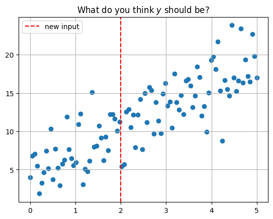
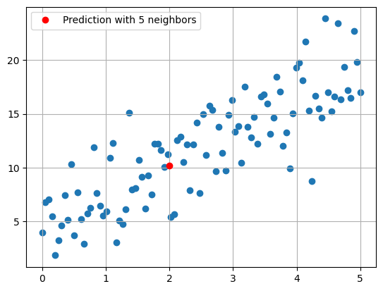
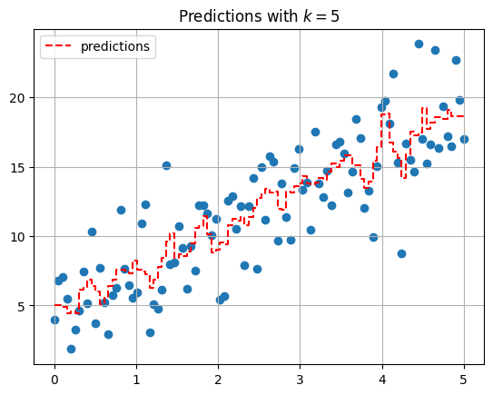
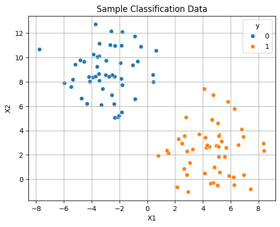
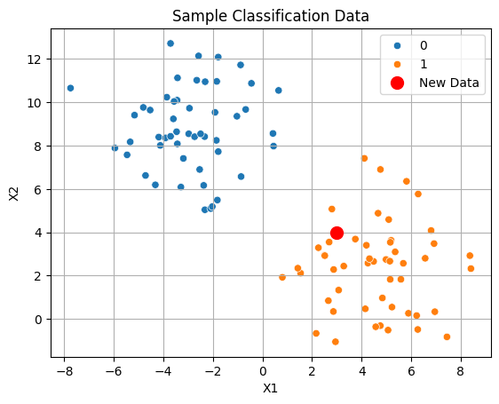

Introduction to Classification and K-Nearest Neighbors#
Objectives
Identify Classification problems in supervised learning
Use
KNeighborsClassifierto model classification problems using scikitlearnUse
StandardScalerto prepare data for KNN modelsUse
Pipelineto combine the preprocessingUse
KNNImputerto impute missing values
import matplotlib.pyplot as plt
import numpy as np
import pandas as pd
import seaborn as sns
from sklearn.model_selection import train_test_split
from sklearn.pipeline import Pipeline
from sklearn.compose import make_column_transformer
from sklearn.neighbors import KNeighborsClassifier
from sklearn.preprocessing import OneHotEncoder, StandardScaler, PolynomialFeatures
from sklearn.datasets import make_blobs
Today you will work together with a neighbor to answer questions based on the code in the notebook. Use the form here to record your work.
A Second Regression Model#
#creating synthetic dataset
x = np.linspace(0, 5, 100)
y = 3*x + 4 + np.random.normal(scale = 3, size = len(x))
df = pd.DataFrame({'x': x, 'y': y})
df.head()
| x | y | |
|---|---|---|
| 0 | 0.000000 | 3.999828 |
| 1 | 0.050505 | 6.816004 |
| 2 | 0.101010 | 7.080700 |
| 3 | 0.151515 | 5.496586 |
| 4 | 0.202020 | 1.859718 |
#plot data and new observation
plt.scatter(x, y)
plt.axvline(2, color='red', linestyle = '--', label = 'new input')
plt.grid()
plt.legend()
plt.title(r'What do you think $y$ should be?');

KNearest Neighbors#
Predict the average of the \(k\) nearest neighbors. One way to think about “nearest” is euclidean distance. We can determine the distance between each data point and the new data point at \(x = 2\) with np.linalg.norm. This is a more general way of determining the euclidean distance between vectors.
#compute distance from each point
#to new observation
df['distance from x = 2'] = np.linalg.norm(df[['x']] - 2, axis = 1)
df.head()
| x | y | distance from x = 2 | |
|---|---|---|---|
| 0 | 0.000000 | 3.999828 | 2.000000 |
| 1 | 0.050505 | 6.816004 | 1.949495 |
| 2 | 0.101010 | 7.080700 | 1.898990 |
| 3 | 0.151515 | 5.496586 | 1.848485 |
| 4 | 0.202020 | 1.859718 | 1.797980 |
#five nearest points
df.nsmallest(5, 'distance from x = 2')
| x | y | distance from x = 2 | |
|---|---|---|---|
| 40 | 2.020202 | 5.399912 | 0.020202 |
| 39 | 1.969697 | 11.228663 | 0.030303 |
| 41 | 2.070707 | 5.697844 | 0.070707 |
| 38 | 1.919192 | 10.058415 | 0.080808 |
| 42 | 2.121212 | 12.561622 | 0.121212 |
#average of five nearest points
df.nsmallest(5, 'distance from x = 2')['y'].mean()
8.989291099212547
#predicted value with 5 neighbors
plt.scatter(x, y)
plt.plot(2, 10.207196799, 'ro', label = 'Prediction with 5 neighbors')
plt.grid()
plt.legend();

Using sklearn#
The KNeighborsRegressor estimator can be used to build the KNN model.
from sklearn.neighbors import KNeighborsRegressor
#predict for all data
knn = KNeighborsRegressor(n_neighbors=5)
knn.fit(x.reshape(-1, 1), y)
predictions = knn.predict(x.reshape(-1, 1))
plt.scatter(x, y)
plt.step(x, predictions, '--r', label = 'predictions')
plt.grid()
plt.legend()
plt.title(r'Predictions with $k = 5$');

from ipywidgets import interact
import ipywidgets as widgets
def knn_explorer(n_neighbors):
knn = KNeighborsRegressor(n_neighbors=n_neighbors)
knn.fit(x.reshape(-1, 1), y)
predictions = knn.predict(x.reshape(-1, 1))
plt.scatter(x, y)
plt.step(x, predictions, '--r', label = 'predictions')
plt.grid()
plt.legend()
plt.title(f'Predictions with $k = {n_neighbors}$');
#explore how predictions change as you change k
interact(knn_explorer, n_neighbors = widgets.IntSlider(value = 1,
low = 2,
high = len(x)));
Classification#
Unlike regression, classification problems involve predicting a categorical variable. For example, the breed of dog, whether or not a customer purchases an item, the presence of a disease, and so on. Today, we will examine the examples of predicting whether or not a person survived the titanic sinking and whether or not a person defaults on their credit card. For each of these problems, we will use the K-Nearest Neighbors algorithm, which we introduce below.
Problem Motivation#
#make data
X, y = make_blobs(centers = 2, cluster_std=2, random_state = 42)
#create dataframe
data_1 = pd.DataFrame(X, columns = ['X1', 'X2'])
data_1['y'] = y
#plot sample dataset
sns.scatterplot(data = data_1, x = 'X1', y = 'X2', hue = 'y')
plt.title('Sample Classification Data')
plt.grid();

#dataset with new point
sns.scatterplot(data = data_1, x = 'X1', y = 'X2', hue = 'y')
plt.title('Sample Classification Data')
plt.plot(3, 4, 'ro', markersize = 10, label = 'New Data')
plt.legend()
plt.grid();

The Intuition#
KNN relies on the idea of distance and classifying new datapoints based on the new datapoints distance from known data. There is no equation to be learned as we had with linear regression so we call this a non-parametric model. Essentially, we decide how many points we want to use for voting on the nearness. Below, we demonstrate this with a small sample of the titanic data.


titanic = sns.load_dataset('titanic')
titanic.head()
| survived | pclass | sex | age | sibsp | parch | fare | embarked | class | who | adult_male | deck | embark_town | alive | alone | |
|---|---|---|---|---|---|---|---|---|---|---|---|---|---|---|---|
| 0 | 0 | 3 | male | 22.0 | 1 | 0 | 7.2500 | S | Third | man | True | NaN | Southampton | no | False |
| 1 | 1 | 1 | female | 38.0 | 1 | 0 | 71.2833 | C | First | woman | False | C | Cherbourg | yes | False |
| 2 | 1 | 3 | female | 26.0 | 0 | 0 | 7.9250 | S | Third | woman | False | NaN | Southampton | yes | True |
| 3 | 1 | 1 | female | 35.0 | 1 | 0 | 53.1000 | S | First | woman | False | C | Southampton | yes | False |
| 4 | 0 | 3 | male | 35.0 | 0 | 0 | 8.0500 | S | Third | man | True | NaN | Southampton | no | True |
#take first five rows as a sample
sample_train = titanic[['pclass', 'age', 'survived']].head()
sample_train
| pclass | age | survived | |
|---|---|---|---|
| 0 | 3 | 22.0 | 0 |
| 1 | 1 | 38.0 | 1 |
| 2 | 3 | 26.0 | 1 |
| 3 | 1 | 35.0 | 1 |
| 4 | 3 | 35.0 | 0 |
#select a row as a new example to make a prediction on
new_data = titanic[['pclass', 'age']].iloc[30]
new_data
pclass 1.0
age 40.0
Name: 30, dtype: float64
#distance from new data to first example in sample
np.linalg.norm(sample_train.iloc[0, :2] - new_data)
18.110770276274835
#distance between new data and all sample data points
#apply can be used to apply a function to all rows of a DataFrame
distances = sample_train[['pclass', 'age']].apply(lambda x: np.linalg.norm(x - new_data), axis = 1)
distances
0 18.110770
1 2.000000
2 14.142136
3 5.000000
4 5.385165
dtype: float64
#create a column of distances between data and new observation
sample_train['distance'] = distances
sample_train
| pclass | age | survived | distance | |
|---|---|---|---|---|
| 0 | 3 | 22.0 | 0 | 18.110770 |
| 1 | 1 | 38.0 | 1 | 2.000000 |
| 2 | 3 | 26.0 | 1 | 14.142136 |
| 3 | 1 | 35.0 | 1 | 5.000000 |
| 4 | 3 | 35.0 | 0 | 5.385165 |
#sort by least distance to new data point
sample_train.sort_values('distance')
| pclass | age | survived | distance | |
|---|---|---|---|---|
| 1 | 1 | 38.0 | 1 | 2.000000 |
| 3 | 1 | 35.0 | 1 | 5.000000 |
| 4 | 3 | 35.0 | 0 | 5.385165 |
| 2 | 3 | 26.0 | 1 | 14.142136 |
| 0 | 3 | 22.0 | 0 | 18.110770 |
Question#
If you determine the outcome based on the 1 nearest neighbor, what would you predict? 3 nearest neighbors?
titanic.info()
<class 'pandas.core.frame.DataFrame'>
RangeIndex: 891 entries, 0 to 890
Data columns (total 15 columns):
# Column Non-Null Count Dtype
--- ------ -------------- -----
0 survived 891 non-null int64
1 pclass 891 non-null int64
2 sex 891 non-null object
3 age 714 non-null float64
4 sibsp 891 non-null int64
5 parch 891 non-null int64
6 fare 891 non-null float64
7 embarked 889 non-null object
8 class 891 non-null category
9 who 891 non-null object
10 adult_male 891 non-null bool
11 deck 203 non-null category
12 embark_town 889 non-null object
13 alive 891 non-null object
14 alone 891 non-null bool
dtypes: bool(2), category(2), float64(2), int64(4), object(5)
memory usage: 80.7+ KB
Using KNeighborsClassifier#
The KNeighborsClassifier works just like the earlier LinearRegression estimator. You will instantiate, fit, predict, and score the model as before. Additionally, we have a parameter n_neighbors that will control how many neighbors we make our classification by. To begin, let us form our training and testing data using pclass and age with 5 neighbors.
# X and y
titanic = titanic.dropna()
X = titanic[['pclass', 'age']]
y = titanic['survived']
# train/test split
# random_state = 22
X_train, X_test, y_train, y_test = train_test_split(X, y, random_state=22)
# instantiate
knn = KNeighborsClassifier(n_neighbors=5)
# fit
knn.fit(X_train, y_train)
KNeighborsClassifier()In a Jupyter environment, please rerun this cell to show the HTML representation or trust the notebook.
On GitHub, the HTML representation is unable to render, please try loading this page with nbviewer.org.
KNeighborsClassifier()
# score
knn.score(X_train, y_train)
0.7720588235294118
knn.score(X_test, y_test)
0.6739130434782609
.score#
Here, we score the model using the total percent correct or accuracy. Later, we will explore additional metrics for classification but for now this is an intuitive way to score a classifier.
Comparing to Baseline#
Typically, you will use the majority class to serve as a baseline predictor. Here, assume you predict just guessing what the majority class is. For this example, it is easy to use the .value_counts(normalize = True) to create a baseline accuracy.
X_train.head()
| pclass | age | |
|---|---|---|
| 599 | 1 | 49.0 |
| 759 | 1 | 33.0 |
| 136 | 1 | 19.0 |
| 618 | 2 | 4.0 |
| 710 | 1 | 24.0 |
#baseline
y_train.value_counts(normalize = True)
survived
1 0.661765
0 0.338235
Name: proportion, dtype: float64
from sklearn.dummy import DummyClassifier
#which was better?
dummy = DummyClassifier().fit(X_train, y_train)
dummy.score(X_train, y_train)
0.6617647058823529
PROBLEM
Use KNeighborsClassifier to predict the default column using balance and income. Create a train/test split and report the score on both train and test data.
default = pd.read_csv('https://raw.githubusercontent.com/jfkoehler/nyu_bootcamp_fa25/main/data/Default.csv', index_col = 0)
default.head()
| default | student | balance | income | |
|---|---|---|---|---|
| 1 | No | No | 729.526495 | 44361.625074 |
| 2 | No | Yes | 817.180407 | 12106.134700 |
| 3 | No | No | 1073.549164 | 31767.138947 |
| 4 | No | No | 529.250605 | 35704.493935 |
| 5 | No | No | 785.655883 | 38463.495879 |
X = default[['balance', 'income']]
y = default['default']
X_train, X_test, y_train, y_test = train_test_split(X, y, random_state=11)
#baseline on y_train
y_train.value_counts(normalize=True)
default
No 0.965467
Yes 0.034533
Name: proportion, dtype: float64
knn = KNeighborsClassifier()
Improving the Model#
Now, we can try two things to improve our model. First, is to change the data we are using and incorporate more features into the model. To do so, we may want to encode categorical features and use these to feed into the model. To do so, we again will use make_column_transformer and select the categorical features to one-hot-encode, while passing the other features through.
default.head(2)
| default | student | balance | income | |
|---|---|---|---|---|
| 1 | No | No | 729.526495 | 44361.625074 |
| 2 | No | Yes | 817.180407 | 12106.134700 |
cat_cols = ['student']
num_cols = ['balance', 'income']
#select columns
X = default.loc[:, cat_cols + num_cols]
y = default['default']
#create OHE
ohe = OneHotEncoder(sparse_output = False, drop = 'if_binary')
#transformer
encoder = make_column_transformer((ohe, cat_cols),
verbose_feature_names_out=False,
remainder='passthrough')
# train/test
X_train, X_test, y_train, y_test = train_test_split(X, y, random_state=22)
# fit and transform train
X_train_encoded = encoder.fit_transform(X_train)
encoder.get_feature_names_out()
array(['student_Yes', 'balance', 'income'], dtype=object)
# transform the test
X_test_encoded = encoder.transform(X_test)
# instantiate the KNN estimator
knn = KNeighborsClassifier(n_neighbors=1)
# fit on train
knn.fit(X_train_encoded, y_train)
KNeighborsClassifier(n_neighbors=1)In a Jupyter environment, please rerun this cell to show the HTML representation or trust the notebook.
On GitHub, the HTML representation is unable to render, please try loading this page with nbviewer.org.
KNeighborsClassifier(n_neighbors=1)
# score on test
knn.score(X_test_encoded, y_test)
0.9492
y_train.value_counts(normalize = True)
default
No 0.966533
Yes 0.033467
Name: proportion, dtype: float64
Another Important Transformation#
In addition to using the OneHotEncoder to encode the categorical features, existing numeric features need to be put on the same scale. To do this, we convert the data to \(z\)-scores, computed by:
You can accomplish this transformation using the StandardScaler. One way to streamline this is to replace the passthrough argument in the make_column_transformer.
# transformer for scaling
encoder = make_column_transformer((ohe, cat_cols),
remainder=StandardScaler())
# fit and transform
X_train_encoded = encoder.fit_transform(X_train)
# transform
X_test_encoded = encoder.transform(X_test)
# instantiate and fit
knn = KNeighborsClassifier().fit(X_train_encoded, y_train)
# score train and test
print(knn.score(X_train_encoded, y_train))
print(knn.score(X_test_encoded, y_test))
0.976
0.9684
Streamlining data preparation and modeling with Pipeine#
The Pipeline object allows you to chain together different transformers and estimator objects from scikitlearn. In our example, this involves first using the make_column_transformer and then to KNearestNeighbor classifier. See the user guide here for more examples.
# create a Pipeline
pipe = Pipeline([('encode', encoder),
('knn', knn)])
# fit the train data
pipe.fit(X_train, y_train)
/Library/Frameworks/Python.framework/Versions/3.12/lib/python3.12/site-packages/sklearn/compose/_column_transformer.py:1623: FutureWarning:
The format of the columns of the 'remainder' transformer in ColumnTransformer.transformers_ will change in version 1.7 to match the format of the other transformers.
At the moment the remainder columns are stored as indices (of type int). With the same ColumnTransformer configuration, in the future they will be stored as column names (of type str).
To use the new behavior now and suppress this warning, use ColumnTransformer(force_int_remainder_cols=False).
warnings.warn(
Pipeline(steps=[('encode',
ColumnTransformer(remainder=StandardScaler(),
transformers=[('onehotencoder',
OneHotEncoder(drop='if_binary',
sparse_output=False),
['student'])])),
('knn', KNeighborsClassifier())])In a Jupyter environment, please rerun this cell to show the HTML representation or trust the notebook. On GitHub, the HTML representation is unable to render, please try loading this page with nbviewer.org.
Pipeline(steps=[('encode',
ColumnTransformer(remainder=StandardScaler(),
transformers=[('onehotencoder',
OneHotEncoder(drop='if_binary',
sparse_output=False),
['student'])])),
('knn', KNeighborsClassifier())])ColumnTransformer(remainder=StandardScaler(),
transformers=[('onehotencoder',
OneHotEncoder(drop='if_binary',
sparse_output=False),
['student'])])['student']
OneHotEncoder(drop='if_binary', sparse_output=False)
['balance', 'income']
StandardScaler()
KNeighborsClassifier()
# score the train and test
pipe.score(X_train, y_train)
0.976
Visualizing Performance#
sklearn offers a few visualizers for evaluating a classification model. An important starting one is the ConfusionMatrixDisplay tool, demonstrated below.
from sklearn.metrics import ConfusionMatrixDisplay
cmat = ConfusionMatrixDisplay.from_estimator(pipe, X_train, y_train)
plt.title('Training Data Performance');

cmat2 = ConfusionMatrixDisplay.from_estimator(pipe, X_test, y_test)
plt.title('Test Data Performance');

Summary#
While the KNN model is easy to understand and implement, there are many other classification algorithms that frequently will perform better and contain interpretable parameters. Next class, we will examine one such example with LogisticRegression and tree models and ensembles.